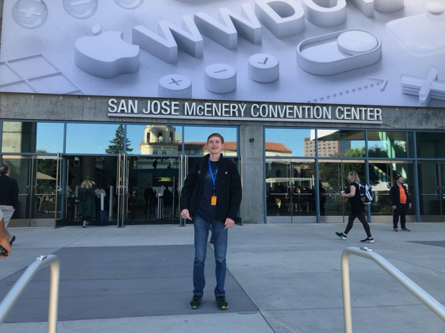

I build machine learning systems that waste less compute.
My research spans the inference and training stack: deciding when a small local model's
answer is good enough before paying for a frontier one, packing training workloads onto
partitioned GPUs, and simulating wafer-scale interconnects so runtime changes can be
validated in minutes instead of days.
I studied Computer Engineering at Columbia University
(B.S. 2026), where I published first-author work on GPU partitioning and fine-tuning efficiency
with Prof. Martha Kim and IBM Research.
At Cerebras Systems, I designed and built a
simulator of the wafer-scale engine's interconnect from scratch — now part of how
runtime engineers there diagnose throughput stalls on large models.
News
2026New preprint: Escalator — activation-probe verifiers for routing between local and remote models.
2026Graduated from Columbia University with a B.S. in Computer Engineering.
2025How Low Can LoRA Go presented at MLArchSys, co-located with ISCA 2025.
2025Our paper on energy-efficient MIG scheduling appeared at IEEE CCGrid 2025.
2025Spent the summer at Cerebras Systems building a from-scratch simulator of the wafer-scale engine's interconnect.
2024First paper, on characterizing training energy on multi-instance GPUs, published at EuroMLSys 2024.
Generate locally first, then decide. A lightweight probe over the local model's hidden
activations scores each response (ROC-AUC 0.861 at detecting correctness) and escalates
to a remote model only when the local answer looks insufficient, matching always-remote
accuracy while escalating just 54% of queries.
Fig. 1 — Every query is answered locally first; a lightweight probe over the
local model's hidden activations decides whether that answer ships or the query pays for a
frontier model.
E. Lipe, N. Karia, C. Espenshade, C. Stein, A. Tantawi, O. Tardieu
IEEE International Symposium on Cluster, Cloud and Internet Computing (CCGrid), 2025
Treats a single MIG-partitioned GPU as a multi-objective scheduling problem under real
diurnal datacenter load, with reinforcement-learning-driven repartitioning — 68% better
on a joint energy–tardiness objective than an unpartitioned GPU.
C. Espenshade, U. Deshpande, Y. Zhu, E. K. Lee, M. A. Kim
Machine Learning for Computer Architecture and Systems (MLArchSys, at ISCA), 2025
A profiling study of LoRA rank on Llama 3.1 8B across throughput, energy, and memory,
showing up to 2.7× efficiency gains with negligible impact on perplexity.
C. Espenshade, R. Peng, E. Hong, M. Calman, Y. Zhu, P. Parida, E. K. Lee, M. A. Kim
Workshop on Machine Learning and Systems (EuroMLSys, at EuroSys), 2024
Measured six workloads, from 14M-parameter classifiers to 1.5B-parameter language models,
across MIG partition mixes: heterogeneous partitions deliver up to 33% lower energy and
9% higher training throughput from a single GPU, and fine-tuning runs 55% faster at
42% less energy.
Before this existed, validating a runtime change meant a 24-hour run on wafer hardware.
I designed and built a C++ simulator of the wafer's inter-die fabric from a blank file:
every region, core, and wire, with backpressure from link capacities and delays, so
simulated throughput and stalls track the real machine. Iteration dropped to 5 minutes
(288x), and the simulator surfaced KV-cache token drops, batching inefficiencies,
and race conditions on production-scale models. Hardware, systems, and ML teams adopted
it, and engineers I onboarded kept extending it after my internship ended.
Transformer accelerator on ESP Columbia, 2025
Extended the HLS4ML compiler with custom C++ translators for matmul and transpose,
implementing the hardware primitives transformer attention needs on FPGAs within the
open-source ESP SoC platform.
Report
FPGA CNN accelerator Columbia, 2025
Hardware/software co-design in SystemVerilog and C running an int8-quantized TensorFlow
CNN (scales and zero-points handled in hardware), reaching a 3.4x convolution speedup
at 30% device utilization.
Presentation
Linux kernel scheduler & filesystem Columbia, 2024
A custom priority scheduler (+75% throughput on mixed workloads) and a complete
read/write filesystem, both implemented in-kernel in C.
Notes
Robotic patch-clamp orchestration Columbia Bioelectronic Systems Lab, 2024
Real-time control software coordinating ten lab devices, including manipulators, pumps, and
cameras, to 1.0 µm precision for automated patch-clamp electrophysiology.
GitHub
Archive
Where this started.
Apple WWDC scholarship 2018
One of 350 students worldwide selected for a physics-based game simulating collisions
and gravity, written in Swift. Apple flew me to San José as a high-school freshman.
Code

Leaning Eagle 2017–2019
An iOS ordering app for my high school's coffee bar — Stripe, Apple Pay, CloudKit,
and AWS Lambda — that ran in production on the App Store through two years of
daily lunch rushes.
FIRST Robotics vision 2019
Real-time object tracking running on an iPhone mounted to a competition robot,
streaming target poses over TCP to the drive controller.
GitHub
Also from those years: augmented-reality turn-by-turn navigation prototypes, and websites
built and delivered for local clients.